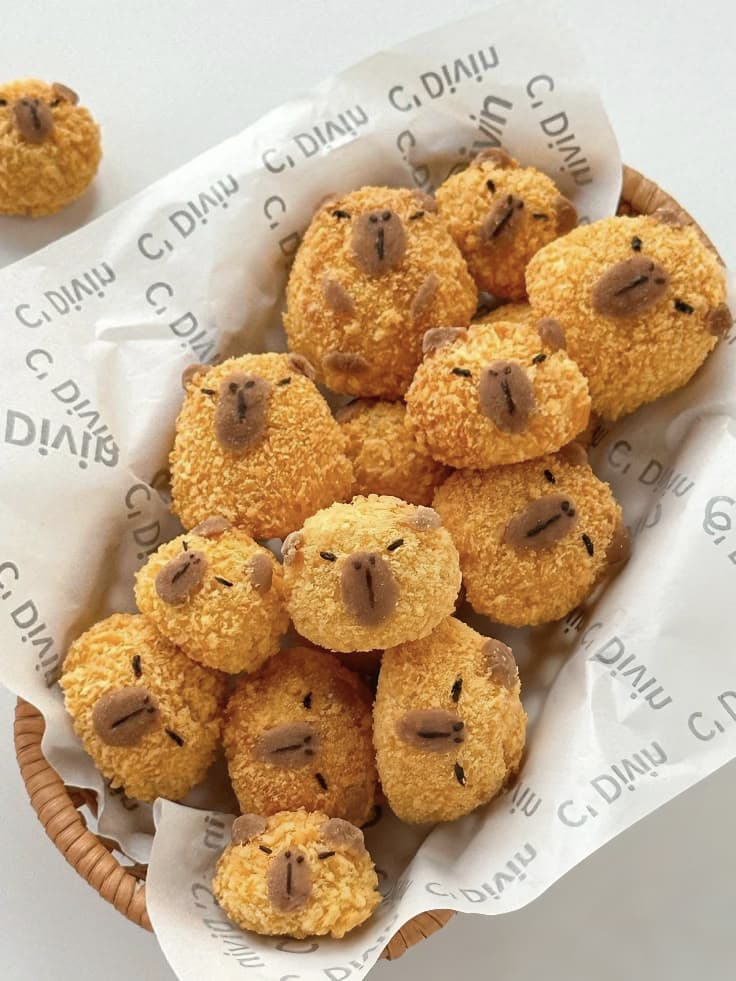

En Papibaras, nuestra misión es celebrar la creatividad culinaria transformando un alimento cotidiano como la papa en una experiencia única, divertida y memorable. Nos dedicamos a crear papas en forma de capibara que no sólo deleitan el paladar con su sabor crujiente y casero, sino que también cautivan a grandes y chicos con su diseño encantador y original.
Queremos convertir cada platillo en una oportunidad para compartir sonrisas, fortalecer vínculos familiares y despertar la imaginación a través de la comida. En Papibaras, creemos que la cocina puede ser arte, juego y amor, todo en uno. Por eso, nos esforzamos por ofrecer productos de alta calidad, preparados con dedicación, ingredientes frescos y una gran dosis de cariño.
Más que vender un alimento, buscamos generar momentos de alegría, conexión y asombro en cada bocado, llevando a la mesa una propuesta gastronómica innovadora que inspire y encante.
 ← Volver al inicio